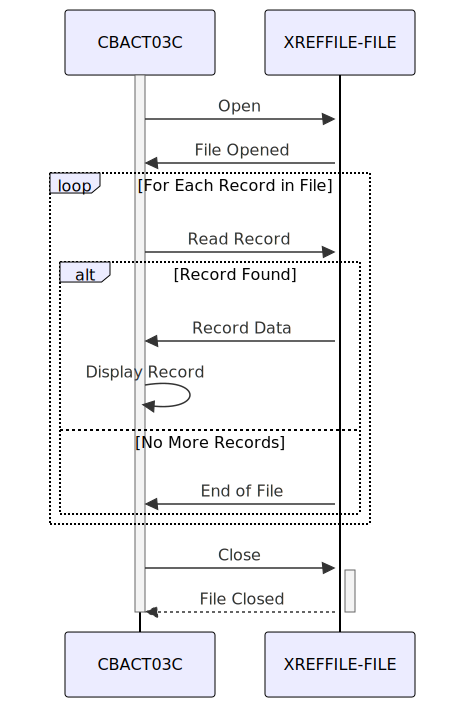

Gerado em: 1º de outubro de 2024
Título do Documento: Processador de Arquivo de Dados de Referência Cruzada de Conta de Cartão
Descrição Resumida:
O Processador de Arquivo de Dados de Referência Cruzada de Conta de Cartão é um programa que lê e exibe o conteúdo de um arquivo contendo informações de contas de cartão de crédito com referência cruzada. Este processo é executado em segundo plano sem exigir interação do usuário.
Histórias do Usuário:
Como analista de dados, preciso garantir que apenas registros válidos sejam usados para análise, portanto, preciso de um programa que possa ler e validar registros de clientes de um arquivo.
Épico Relacionado:
7 - Processamento em Lote
Requisitos Funcionais:
- O programa deve ser capaz de abrir e ler um arquivo contendo informações de contas de cartão de crédito com referência cruzada.
- O programa deve ser capaz de ler e processar cada registro no arquivo sequencialmente.
- Para cada registro, o programa deve exibir as seguintes informações:
- Número do cartão de crédito
- Dados adicionais de referência cruzada
- O programa deve ser capaz de lidar com condições de fim de arquivo normalmente.
- O programa deve ser capaz de lidar com erros de arquivo, como a incapacidade de abrir o arquivo.
Requisitos Não Funcionais:
- Desempenho: O programa deve ser capaz de processar arquivos grandes com eficiência.
- Confiabilidade: O programa deve ser robusto e capaz de lidar com erros inesperados.
- Manutenibilidade: O código deve ser bem estruturado, documentado e fácil de entender para manutenção futura.
Critérios de Aceitação:
- O programa abre e lê o arquivo de dados de referência cruzada com sucesso.
- O programa lê e exibe corretamente as informações de cada registro no arquivo.
- O programa lida com as condições de fim de arquivo normalmente e termina com sucesso.
- O programa lida com erros de arquivo adequadamente e exibe mensagens de erro descritivas.
Melhorias de Código:
- Implementar um mecanismo de registro em log para registrar detalhes de execução do programa, erros e avisos. Isso ajudará na depuração e monitoramento.
- Considere adicionar um recurso para gravar os dados processados em um arquivo de saída, fornecendo flexibilidade em como os dados podem ser usados.
- Refatore a lógica de tratamento de erros para fornecer mensagens de erro mais específicas com base nos códigos de status do arquivo.
- Adicione comentários ao código para explicar o propósito de cada seção e melhorar a legibilidade.
Melhorias de Segurança:
- Implementar controles de acesso para restringir o acesso não autorizado ao programa e ao arquivo de dados de referência cruzada.
- Se os dados no arquivo forem confidenciais, considere implementar criptografia em repouso para protegê-los de acesso não autorizado.
- Manter um registro de auditoria das execuções do programa, incluindo o usuário que executou o programa e o horário de execução.
Diagrama Conceitual:

–Made by “Smart Engineering” (by Compass.UOL)–